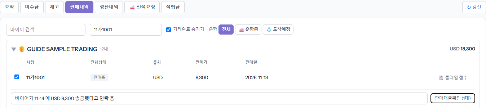
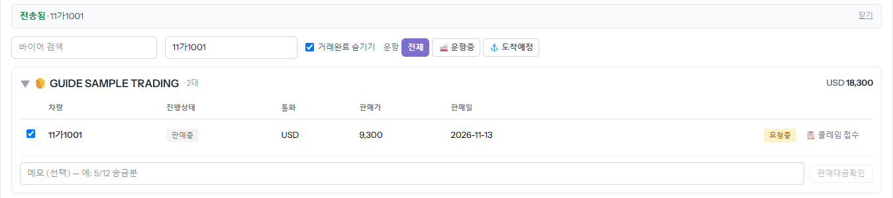
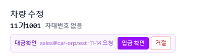
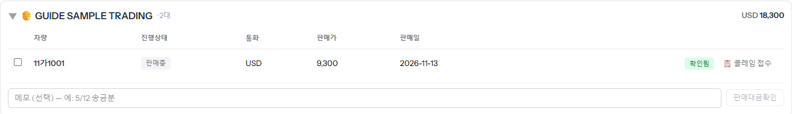

바이어가 돈을 보냈다고 하면, 들어왔는지 ERP 재무에게 확인해 달라고 알리는 기능입니다. 「내 정산·미수·선적」 → [판매내역]에서 바이어별로 차를 골라 보냅니다. 입금요청과 달리 금액은 적지 않습니다 — 얼마가 들어왔는지는 ERP 가 통장을 보고 맞춥니다.
판매내역은 바이어별로 접혀 있습니다. 바이어 이름을 누르면 펼쳐집니다. 위쪽 검색칸에 바이어 이름이나 차량번호를 넣으면 빨리 찾습니다. 이번 송금에 해당하는 차를 모두 체크하고, 아래 메모 칸에 송금일·금액처럼 재무가 통장에서 찾기 쉬운 내용을 적습니다(선택).

버튼에 고른 차 수가 나옵니다. 누르면 위에 「전송됨」이 뜨고, 고른 차마다 노란 「요청중」 칩이 붙습니다. 한 번에 한 바이어의 차만 묶어 보냅니다 — 다른 바이어 차는 그 바이어 칸에서 따로 보냅니다.

ERP 「차량 관리」에서 그 차를 열면 맨 위에 보라색 「대금확인」 줄이 보입니다. 돈이 들어왔으면 [입금 확인], 아직이면 사유를 적어 [거절]합니다.

결과는 그 차 줄의 칩과 오른쪽 위 종(🔔)에 옵니다. 거절이면 ⓘ 를 누르거나 종을 열어 사유를 봅니다(입금요청 가이드 7단계와 같은 모양). 사정이 풀리면 다시 보내면 됩니다.
